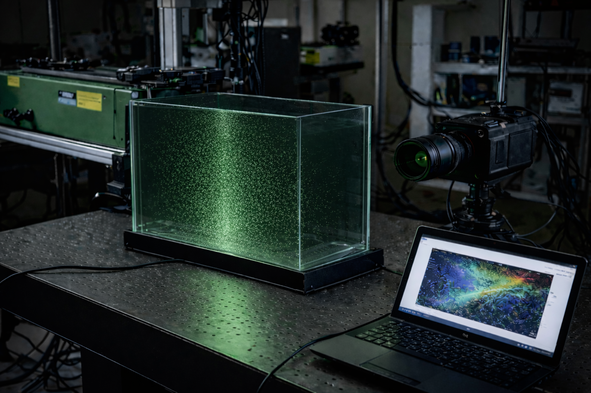

Polyamide clip — non-linear contact


Advanced modeling of a polyamide clip : from linear elasticity to realistic nonlinear contact simulation.
Hi, I’m Anas — a mechanical simulation and validation engineer focused on automotive CAE, finite element modeling, structural analysis, vibration analysis and crash simulation workflows.
My professional experience connects simulation preparation, solver execution, post-processing and engineering interpretation to support concrete design decisions. I also hold a Master in Simulation & Instrumentation in Mechanics from Université Grenoble Alpes (UGA).

Experience
Automotive simulation work across transmission component optimization and full-vehicle crash simulation workflows, with emphasis on model preparation, meshing, solver setup, post-processing and design feedback.

Engineering Approach
Selected Projects
Academic and independent projects that support my professional CAE profile: contact non-linearity, durability and experimental flow diagnostics.
Advanced modeling of a polyamide clip : from linear elasticity to realistic nonlinear contact simulation.

Mechanical and fatigue assessment of a skateboard axle : static stress, numerical fatigue life prediction using Goodman correction, and Miner’s damage.


Experimental setup and python based post-processing for PIV (Particle Image velocimetry) analysis of a turbulent water jet : Instrument integration, image acquisition, cross correlation analysis and validation against commercial software.
Academic Foundation
Full overview of academic projects covering numerical simulation, experimental mechanics, scientific computing and multiphysics.
CAE Skillset
A compact view of the technical capabilities I use in professional simulation work.
Testimonials
Endorsements supporting my professional experience, technical communication and language proficiency.
A letter of appreciation from my tutor at Capgemini highlighting my contributions to the optimization of an internal clutch mechanism.
View PDF DocumentA recommendation letter from my English professor recognizing my enhanced professional English proficiency and communication skills.
View PDF Document